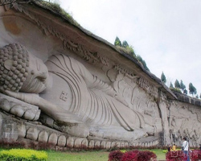
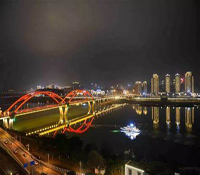
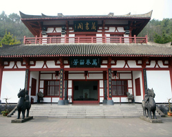

主要景点简述 |
|
阆中古城
·阆中古城三面环水，一面靠山，风景秀丽，自古有“阆苑仙境”之誉，至今已有2300多年的历史，战国中期曾为巴国国都。
·阆中古城有张飞庙、永安寺、五龙庙、滕王阁、观音寺、巴巴寺、大佛寺、川北道贡院等8处全国重点文物保护单位。
·阆中古城饮食文化远近闻名，有牛羊杂碎面、吊汤扯面、川北凉粉、热凉粉等充满古城民俗民风的饮食小吃。 |
|
阆中白塔
白塔建于明代末期，坐落在号称“天下第一江山”的阆中白塔山，是阆中的又一标志性建筑。
白塔是一座风水塔，共十三层，高二十九米，外十二层，内六层并有螺旋梯道九十一级供人登临绕窗远眺，以便从各个不同角度观览阆中风物。
当登临顶层往西北方向欣赏时，看不见脚下山崖，人感觉仿佛凌空飞翔。 |
|
南充凌云山
凌云山风景区位于四川省南充市高坪区境内。是国际生态安全旅游示范基地、AAAA国家级旅游景区、国家级森林公园、中国最佳风水旅游景区、全国青少年户外体育活动营地、省级地质公园和四川省文化产业示范基地。
凌云山海拔562.6米，有左青龙、右白虎、前朱雀、后玄武之独特地貌，山势连绵，林木参天，具有“雄、奇、险、幽”四大特色，山顶凌云古刹始建于汉末，现存真武宫为清道光年间重建，有遇仙岭、降魔台、老君洞、老龙洞、望夫崖、舍身崖、将军坟等自然奇观，享有“果郡灵山”之美誉。 |
 |
周子古镇
周子古镇被誉为嘉陵江上最后的码头古镇。长约1000米的百年古街，除有首尾相连、错落有致的3000余套清代民居院落外，还保存有完好的濂溪祠、万寿宫、武圣宫、画江楼、沿仙观等古建筑遗址。周子古镇兴于唐宋年间，千年积淀，蕴育了厚重独特的码头古镇文化。 |
|
|
| 旅游攻略 |
|
|
-
南充的嘉陵江，这条江算是南充的母亲河，江水清澈、水流平缓，两岸风景如画。

|
|
2.嘉陵区著名景点：陈寿故居。就是《三国志》的作者，相信上过初中的人都知道。该景点人文自然景观古朴沧桑、文化气息浓厚，而且背靠西山风景区，是周边人民必去的观光场所。
 |
3.朱德纪念馆占地面积27亩，建筑面积近5600平方米，展厅面积近4600平方米，分为三大展区：朱德生平事迹基本陈列、缅怀厅和互动体验区。
|
|